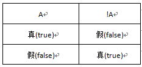

是非颠倒(逻辑非操作符）
"!"是逻辑非操作符，也就是"不是"的意思,非真即假，非假即真。好比小华今天买了一个杯子，小明说:"杯子是白色的"，小亮说:“杯子是红色的”，小华说："小明说的不是真话，小亮说的不是假话"。猜猜小华买的什么颜色的杯子，答案：红色杯子。
逻辑非操作符值表:
看看下面代码，变量c的值是什么:
var a=3; var b=5; var c; c=!(b>a); // b>a值是true,! (b>a）值是false c=!(b<a); // b<a值是false, ! (b<a）值是true